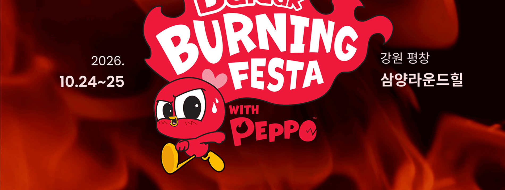

특별한 맛으로 새로운 식문화를 만듭니다.
삼양라면의 이야기와 기술력을 확인하세요.
다양한 취향에 맞춘 맛의 가능성을 탐색합니다.
삼양그룹 100주년, 역사와 성취를 함께 기념하는 특별한 순간을 공유합니다.
인재육성과 사회적 책임으로 기업의 울타리를 넘어 따뜻한 내일을 만듭니다.
인류의 미래를 바꾸는 연구와 혁신으로 건강한 내일을 준비합니다.
삼양식품의 다양한 이야기와 콘텐츠를 만나보세요.